急性心肌梗塞(AMI)外周血scRNA-Seq分析流程及结果梳理
原文：https://mp.weixin.qq.com/s?__biz=MzAwMzIzOTk5OQ==&mid=2247500943&idx=1&sn=c85cf5be55fa2ae4b85c70ca7e4dfffc&chksm=9b3cbddfac4b34c99abb307f71883ca495e2ed876556a7ad064a3cd69e17827dc534317b372e#rd 合集：文献速递
写在前面
本研究探讨了急性心肌梗塞（AMI）患者外周血单核细胞的单细胞RNA测序 。研究人员招募了10名AMI患者，并根据光学相干断层扫描（OCT）的结果将他们分为斑块破裂（PR）和非斑块破裂（NPR）两组。研究人员分析了82550个单细胞的转录组特征，发现了27个细胞簇和6种细胞类型，包括单核细胞、T细胞、NK细胞、B细胞、巨核细胞和CD34+细胞。本次推送我们先介绍大致分析流程与主要结果，下期会用示例数据带领大家复现 本文的主要图表。
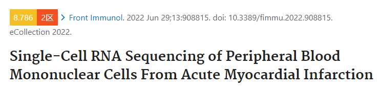
技术路线

**Results **
斑块破裂（PR）和非斑块破裂（NPR）的急性心肌梗塞患者的循环免疫细胞景观
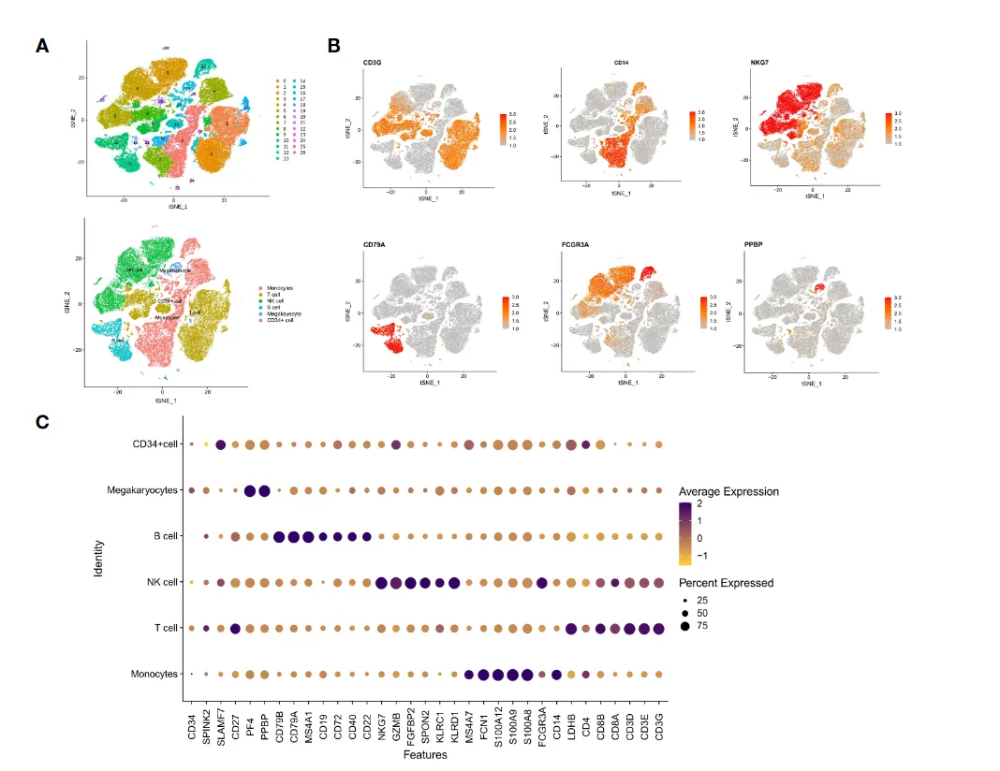
fig.1
●细胞鉴定，通过SingleR 和主要标记基因对细胞进行鉴定，初步区分了T、B、NK、monocytes、megakaryocytes等细胞。
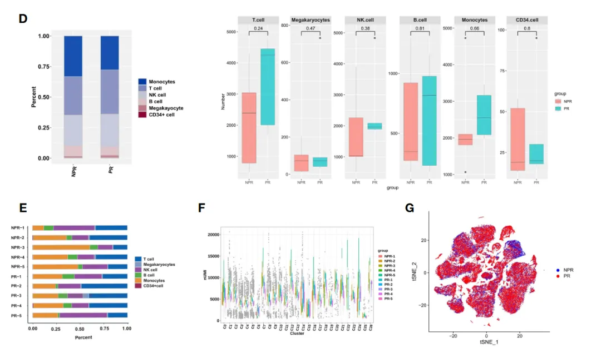
●在NPR和PR组中各种免疫细胞比例和数量（组间无显著性差异），以及每个患者的细胞比例、每个簇的 UMI 数量和tSNE降为聚类图（证明数据处理无批次差异）
PR患者的循环单核细胞显示出更活跃的炎症状态
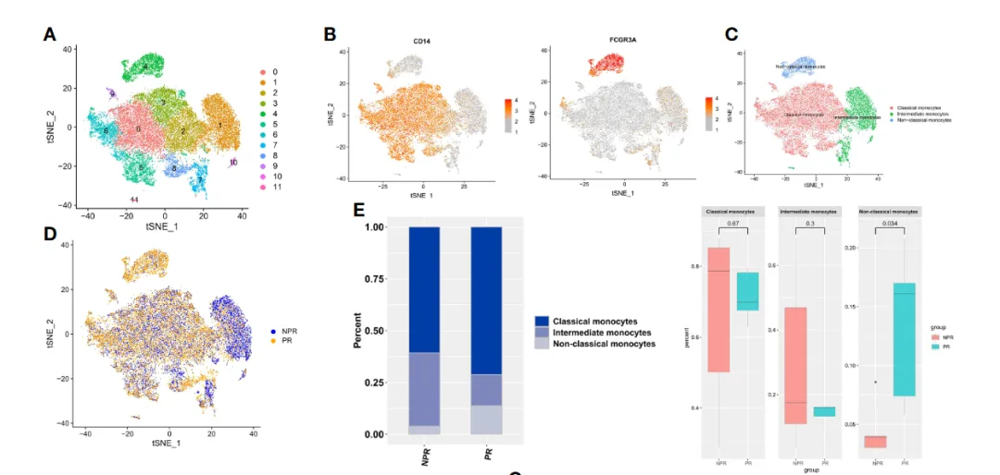
●循环单核细胞根据其功能和表型可分为三种亚型：
经典单核细胞（cMo）为CD14++CD16-中间型单核细胞（iMo）为CD14+CD16+非经典单核细胞（ncMo）为CD14-/lowCD16+
●提取单核细胞数据，tSNE降为聚类分群得到了11个细胞簇，根据CD14、FCGR3A（CD16）表达，细分为classical、intermediate和non-classical monocytes 三类细胞。展示细胞比例、组间细胞分布（tSNE降维图）
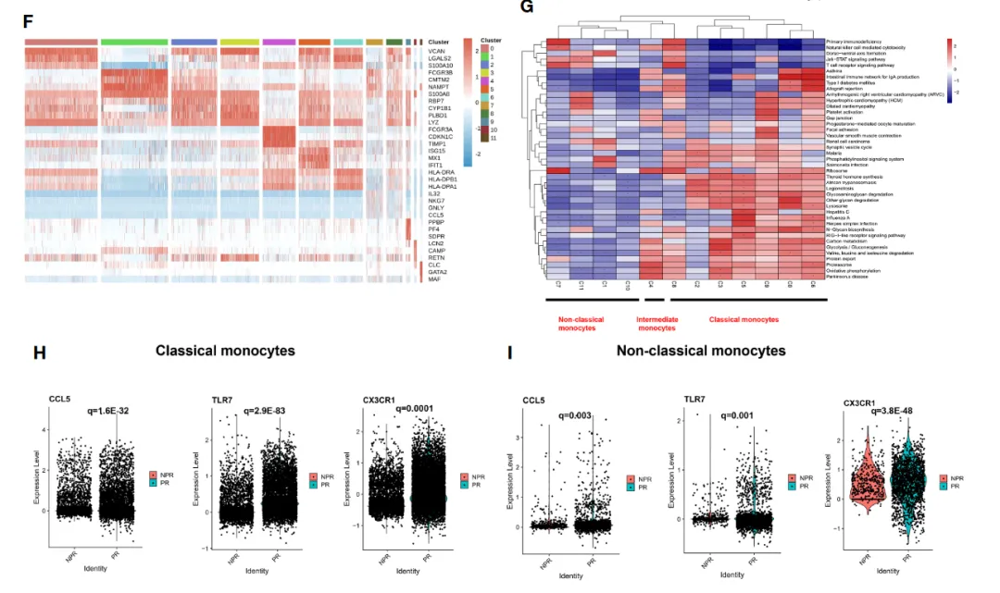
●展示单核细胞的11个细胞簇的标记基因，及其GSEA富集热图
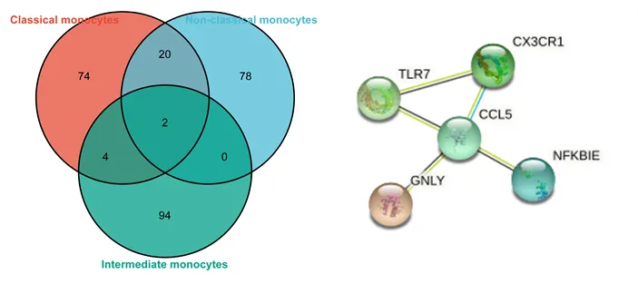
●对 PR 患者的三种单核细胞类型进行了转录组分析，取前 100 个上调的差异表达基因（DEG）进行比较，以找到共同的 Hub 基因。结果发现，典型的促炎基因，如 CCL5、TLR7 和 CX3CR1 在来自经典和非经典单核细胞的 PR 患者中均显着上调。
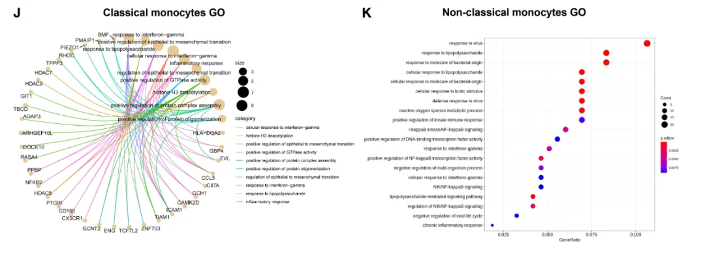
●经过对 PR 患者的经典和非经典单核细胞共识上调基因的GO富集分析发现，这些基因主要富集在“炎症反应”和“NF-kappaB信号通路的正向调节”两个信号通路。这进一步确定了来自 PR 患者的经典和非经典单核细胞中明显增加的炎症分子。
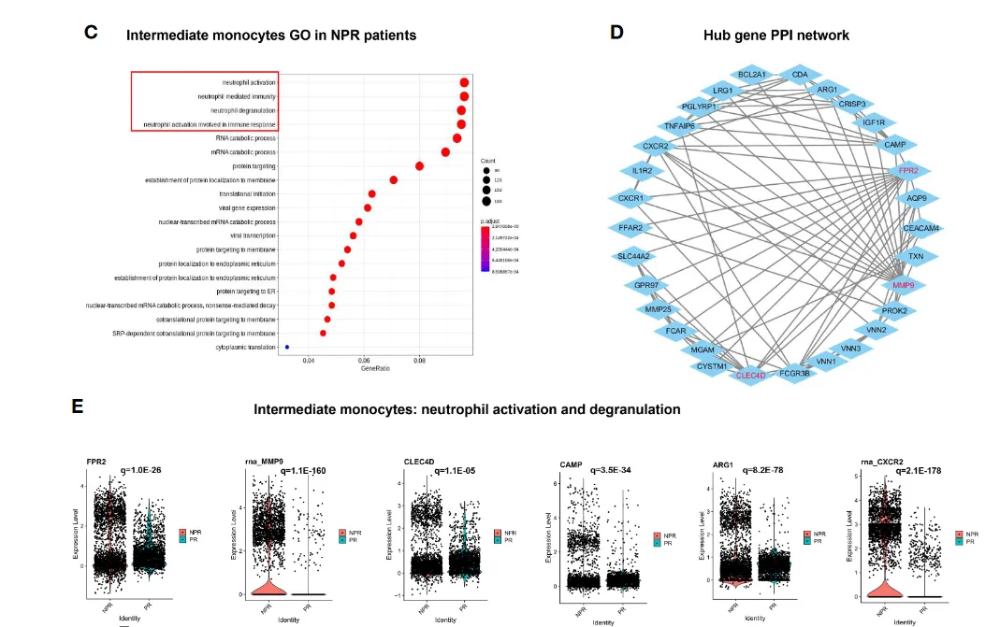
●相对于经典和非经典单核细胞，中间单核细胞在NPR患者中的比例更高。对来自NPR患者的中间单核细胞中上调的基因进行GO富集分析，结果发现它们与"中性粒细胞脱颗粒"、"中性粒细胞激活"和"中性粒细胞介导的免疫"等相关通路有关。例如，FPR2、MMP9、CLEC4D、CAMP、ARG1和CXCR2这些中性粒细胞激活和脱颗粒的基因，在来自NPR患者的中间单核细胞中被显著表达。
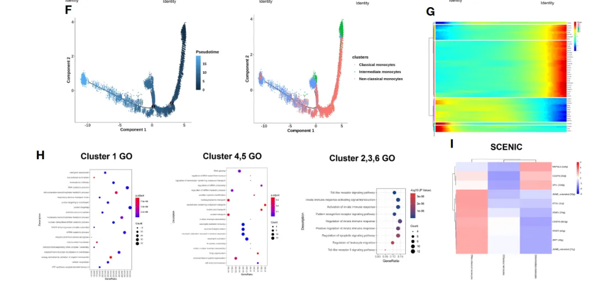
● 伪时间轨迹分析确定单核细胞发育不同阶段的转录特征，以确定与功能变化相关的基因表达轨迹。经典和中间型单核细胞主要处于发育轨迹的起点，而非经典单核细胞主要处于伪时间轨迹的终点，图F（这里可以加一个CytoTRACE分析验证发育期起始位点）。
●通过发育轨迹的变化，将单核细胞分为6个簇(cluster)，如图G所示。在伪时间分析中，经典单核细胞(指簇1中的细胞)显著上调诸如"翻译起始"和"mRNA分解代谢过程"等特征基因，这表明细胞相关代谢活跃。
●中间单核细胞(指4和5簇中的细胞)的显著上调的特征基因，GO富集到了"中性粒细胞激活和脱颗粒"和"参与免疫反应的中性粒细胞激活"等通路，这进一步证实了之前的分析(即NPR患者的中间单核细胞中的上调基因)。
●非经典单核细胞(指2、3和6簇中的细胞)显著上调的特征基因，GO富集到了"toll样受体信号通路"和"先天免疫反应的激活"等通路，这些通路代表了高度促炎状态。
●综上所述，伪时空分析表明，AMI患者的外周循环单核细胞从经典和中间单核细胞逐渐过渡到非经典单核细胞。
● SCENIC 转录调节分析，识别单核细胞之间具有基因表达差异的转录因子。值得注意的是，由 NAP1L1、CEBPB 和 SPI1 调节的基因表达在中间单核细胞 中上调。STAT1、STAT2、JUNB、JUND、IRF7、ETS1、CEBPD在非经典单核细胞 中表达突出，主要与“对细胞因子的反应”、“I型干扰素信号通路”和“细胞因子介导的信号通路”相关途径（图 3I）。这些结果意味着非经典单核细胞 中的转录因子可能促进 PR 中的炎症过程。（作者将全部的细胞进行SCENIC分析，因为非经典单核细胞 在PR组患者比率显著增加）
●文章接下来是对T细胞、NK细胞、B细胞进行同样的分析（亚群细分、细胞比例、差异基因、富集分析、伪时间分析），就不过多赘述了，感兴趣的小伙伴可以去看原文，我们之间跳到文章结果最后一部分。
AMI患者循环免疫细胞中复杂的细胞间通讯网络
● 细胞通讯分析。为了系统地研究循环免疫细胞的相互作用，作者构建了一个基于CellChat的细胞-细胞通信网络。
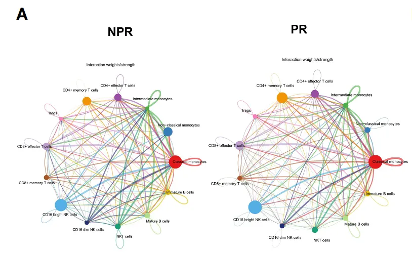
●PR 和 NPR 患者细胞间通讯的总体分析相似，因此作者重点关注 PR 中的细胞间通讯
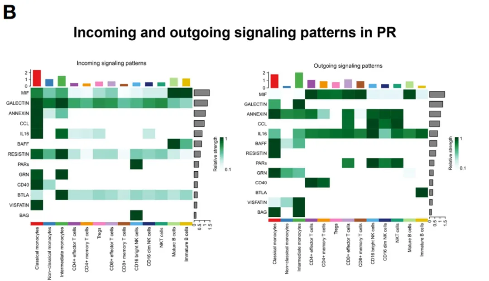
●CellChat检测到一些重要的信号通路，这些通路包括MIF，GALECTIN，ANNEXIN，CCL，IL16，BAFF，RESISTIN，PARs，GRN，CD40，BTLA，VISFATIN和BAG通路。这些通路可能在细胞间的相互作用和通讯中发挥着重要的作用。左图为细胞接受信号，右图为细胞输出信号。
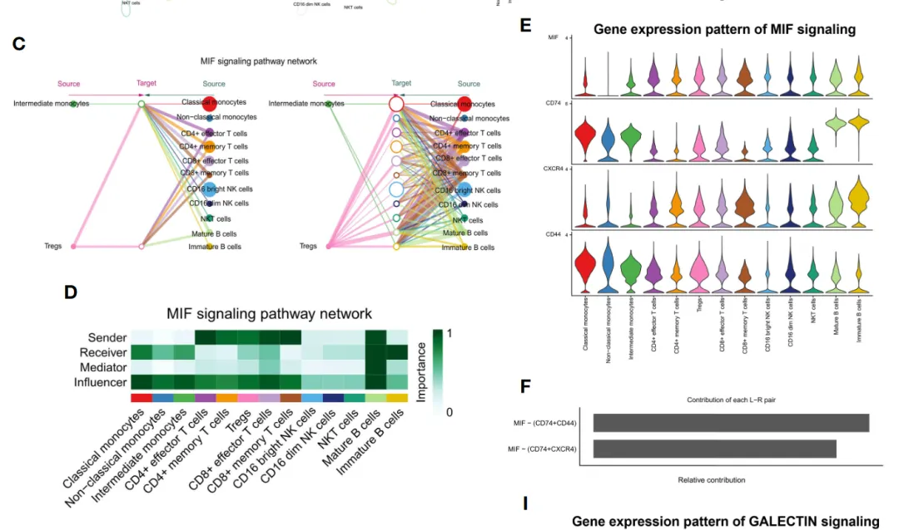
●巨噬细胞迁移抑制因子（MIF）是动脉粥样硬化中一个重要的促炎症因子。据报道，MIF通过与趋化因子受体CXCR2和CXCR4相互作用来促进动脉粥样硬化白细胞的招募和病理性炎症。
●MIF信号通路的网络中心性分析表明，作用于单核细胞和B细胞的MIF配体主要来源于T细胞的各类亚型。另外，成熟的B细胞在细胞之间的交流中也扮演着一个关键的角色。这表明斑块破裂中的MIF信号通路是复杂和高度冗余的，有很大一部分单核细胞被多个配体所针对。CellChat表明，大多数免疫细胞之间的MIF信号互动是通过旁分泌实现的，只有成熟的B细胞表现出明显的自分泌信号。需要注意的是，CD74-CD44和CD74-CXCR4这两对MIF配体-受体是MIF信号传导途径的主要贡献者。这在促进动脉粥样硬化炎症方面发挥了重要作用 。
总结
作者发现PR组的单核细胞和T细胞表现出更强的炎症活性，而NPR组的中间型单核细胞和CD8+效应T细胞与中性粒细胞活化和凋亡有关 。作者还探讨了不同细胞类型之间的相互作用网络 ，发现MIF和GALECTIN信号通路在PR组中起重要作用。这些发现可能为AMI的精准治疗提供新的靶点。

如何联系我们
 公众号后台消息更新不及时，超过48h便不允许回复读者消息，这里给大家留一下领取资料、免费服务器(有root权限的共享服务器,注册即送200￥)的微信号 ，方便各位随时交流、提建议(科研任务繁重，回复不及时请见谅)。此外呼声一直很高的交流群 也建好了，欢迎大家入群讨论：永久免费的千人生信、科研交流群
公众号后台消息更新不及时，超过48h便不允许回复读者消息，这里给大家留一下领取资料、免费服务器(有root权限的共享服务器,注册即送200￥)的微信号 ，方便各位随时交流、提建议(科研任务繁重，回复不及时请见谅)。此外呼声一直很高的交流群 也建好了，欢迎大家入群讨论：永久免费的千人生信、科研交流群
大家可以阅读完这几篇之后添加给生信入门初学者的小贴士 如何搜索公众号过往发布内容

 您点的每个赞和在看，我都认真当成了喜欢
您点的每个赞和在看，我都认真当成了喜欢